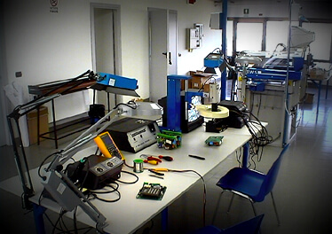

Fundamos nuestra empresa en el año 1997 pensando en que forma podriamos resultar utiles dentro de la electromedicina y bioingenieria en nuestro pais y latinoamerica.
Asi entonces, logramos brindar servicios de reparacion, mantenimiento preventivo, calibraciones, manejo de normativas de calidad, auditorias y asistencia informatica en una amplia variedad de instrumental medico, banco de sangre diagnóstico, laboratorios y medicina estética.
servicios acorde a lo solicitado por:
- ANMAT DISPOSICIÓN 1682 - BANCO DE SANGRE
- PLAN NACIONAL DE SANGRE CAPÍTULO E3 PÁG. 11
- ORGANIZACIÓN PANAMERICANA - GESTIÓN DE CALIDAD - PÁG. 231
- MINISTERIO DE SALUD RESOLUCIÓN 797/2013
- INCUCAI - RESOLUCIÓN 406 - HISTOCOMPATIBILIDAD
- UNC LABORATORIO DE HEMODERIVADOS RECOLECCIÓN DE PLASMA
- JOINT COMMISSION ACREDITACIÓN HOSPITALARIA
- AABB/ISO 9001 GESTIÓN DE CALIDAD
- PAL FUNDACIÓN BIOQUÍMICA
- CAP - COLEGIO AMERICANO DE PATOLOGÍA
CONTAMOS CON PROFESIONALES MATRICULADOS CON ASISTENCIA A CURSOS DE CAPACITACION TECNICA NACIONAL E INTERNACIONAL, CON OBTENCION DE CERTIFICACIONES PARA INSTALAR, CONSERVAR Y REPARAR DISTINTOS TIPOS Y MODELOS DE EQUIPAMIENTOS EN ELECTROMEDICINA.
